|
You are here : Control
System Design - Index | Book Contents |
Chapter 5
5. Analysis of SISO Control Loops
Preview
Control system design makes use of the two key enabling techniques:
analysis and synthesis. Analysis concerns itself with the impact that a
given controller has on a given system when they interact in feedback
while synthesis asks how to construct controllers with certain
properties. This chapter covers analysis. For a given controller and
plant connected in feedback it asks (and provides answers for) the
following:
- Is the loop stable?
- What are the sensitivities to various disturbances?
- What is the impact of linear modeling errors?
- How do small nonlinearities impact on the loop?
We also introduce several analysis tools; specifically
- Root locus
- Nyquist stability analysis
Summary
- This chapter introduced the fundamentals of SISO feedback control
loop analysis.
- Feedback introduces a cyclical dependence between controller and
system:
- the controller action affects the systems outputs,
- and the system outputs affect the controller action.
- For better or worse, this has a remarkably complex effect on the
emergent closed loop.
- Well designed, feedback can
- make an unstable system stable;
- increase the response speed;
- decrease the effects of disturbances
- decrease the effects of system parameter uncertainties, and
more.
- Poorly designed, feedback can
- introduce instabilities into a previously stable system;
- add oscillations into a previously smooth response;
- result in high sensitivity to measurement noise;
- result in sensitivity to structural modeling errors, and more.
- Individual aspects of the overall behavior of a dynamic system
include
- time domain: stability, rise time, overshoot, settling
time, steady state errors, etc.
- frequency domain: bandwidth, cut off frequencies, gain
and phase margins, etc.
- Some of these properties have rigorous definitions, others tend to
be qualitative.
- Any property or analysis can further be prefixed with the term nominal
or robust;
- nominal indicates a temporarily idealized assumption
that the model is perfect;
- robust indicates an explicit investigation of the
effect of modeling errors.
- The effect of the controller
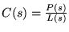
on the nominal model
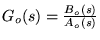 in the feedback loop shown in Figure fig:fb1x is
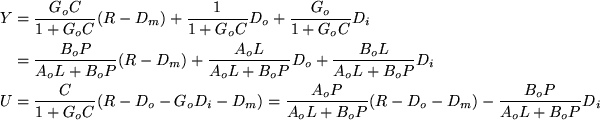
- Interpretation, definitions and remarks:
- The nominal response is determined by four transfer functions.
- Due to their fundamental importance, they have individual
names and symbols:
|
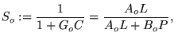 |
the nominal sensitivity function; |
|
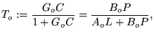 |
the nominal complementary sensitivity; |
|
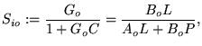 |
the nominal input sensitivity; |
|
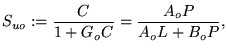 |
the nominal control sensitivity |
and are collectively called the nominal sensitivities.
- All four sensitivity functions have the same poles, the roots
of AoL+BoP.
- The polynomial AoL+BoP
is also called the nominal characteristic polynomial.
- Recall that stability of a transfer function is determined by
the roots only.
- Hence, the nominal loop is stable if and only if the real
parts of the roots of AoL+BoP
are all strictly negative. These roots have an intricate
relation to the controller and system poles and zeros.
- The properties of the four sensitivities, and therefore the
properties of the nominal closed loop, depend on the interlacing
of the poles of the characteristic polynomial (the common
denominator) and the zeros of
AoL,BoP,BoL,
and AoP, respectively.
- Linear modeling errors:
- If the same controller is applied to a linear system,
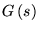,
that differs from the model by
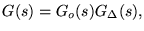
then the resulting loop remains stable provided that
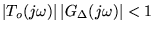,
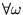.
- This condition is also known as the small-gain theorem.
- Obviously it cannot be easily tested, as the multiplicative
modeling error, 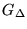,
is typically unknown. Usually bounds on
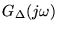
are used instead.
- Nevertheless, it gives valuable insight. For example, we see
that the closed loop bandwidth must be tuned to be less than the
frequencies where one expects significant modeling errors.
- Non-linear modeling errors: If the same controller is applied to a
system,
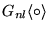,
that not only differs from the model linearly but that is nonlinear
(as real systems will always be to some extent), then rigorous
analysis becomes very hard in general but qualitative insights can
be obtained into the operation of the system by considering the
impact of model errors.
|